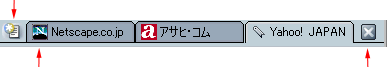
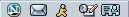

Netscape をカスタマイズする
Sidebar、ブックマーク、タブ式ブラウジングなどの機能を使用して、Netscape をカスタマイズできます。
このセクションでは、カスタマイズ可能な Netscape のブラウザ コンポーネントである Navigator について説明します。
|
このセクションの内容： |
Sidebar
|
このセクションの内容： |
Sidebar について
Sidebar は、ブラウザ内あるカスタマイズ可能な領域です。ここには、最新のニュースや天気、アドレス帳、友だちリスト、株式相場、カレンダーなど、よく使用する項目を配置できます。この他にも選択可能なオプションがたくさんあります。 Sidebar のタブには、これらの項目が定期的に更新されながら表示されます。
Netscape には、予めいくつかの Sidebar タブが設定されていますが、タブを追加、削除、並べ替えることにより、Sidebar をニーズに合わせてカスタマイズできます。
[ このセクションの最初に戻る ]
Sidebar を使用する
Sidebar は、ユーザが閉じない限り、常にブラウザの左側に表示されます。 タブを表示するには、以下の手順で操作します。
- タブのタイトルをクリックします。たとえば、［検索］という文字をクリックすると、 ［検索］タブが開き、Web ページを検索することができます。

|
Sidebar の |
|
Sidebar が表示されていない場合は、閉じている可能性があります。 Sidebar を開くには、以下の手順で操作します。
|
|
ヒント： Sidebar タブを再び読み込むには、タブのタイトルを右クリックして、ポップアップ メニューから［再読み込み］を選択します。
[ このセクションの最初に戻る ]
Sidebar タブを追加する
新しいタブを追加するには、以下の手順で操作します。
- Sidebar の上部にある［タブ］をクリックして、メニューから［Sidebar の設定］を選択します。
- ［Sidebar の設定］ダイアログ ボックスの左側にあるリストからタブを選択します。 フォルダをダブルクリックすると、フォルダが展開表示（または折りたたみ表示）になります。
- ［追加］をクリックします。
- 必要に応じて、さらにタブを追加します。
- ［OK］をクリックして終了します。
注記： Sidebar に 8 個以上のタブを追加すると、画面の見やすさを保つために、それ以上のタブは表示されなくなります。 隠れたタブを表示するには、目的のタブが表示されるまで Sidebar の下にある下矢印ボタンをクリックします。 表示したタブを再び非表示にするには、上矢印ボタンをクリックします。
ヒント：
- タブを追加する前に Sidebar タブをプレビューするには、［Sidebar の設定］ダイアログ ボックスの左側のリストでタブを選択し、［プレビュー］をクリックします。 しばらくすると、［タブ プレビュー］ポップアップ ウィンドウに選択したタブが表示されます。
- Sidebar に使用できるタブのカテゴリ別リストを表示するには、Sidebar の上部にある［タブ］をクリックし、［Sidebar ディレクトリ］を選択します。
Sidebar タブは、表示と非表示を切り替えることもできます。
- Sidebar の上部にある［タブ］をクリックします。 現在設定されているタブがメニューの下に一覧表示されます。
- Sidebar に表示するタブを選択します。 タブのチェックマークを外す（選択解除する）と、そのタブは表示されなくなります（ただしメニューからは削除されません）。
ヒント： Sidebar タブをすばやく非表示にするには、タブ名を右クリックし、［タブを隠す］を選択します。
[ このセクションの最初に戻る ]
Sidebar タブを個別にカスタマイズする
注記： カスタマイズできないタブもあります。
- Sidebar の上部にある［タブ］をクリックして、メニューから［Sidebar の設定］を選択します。
- 右側のリストからタブを選択します。
- ［タブを設定］をクリックします（有効になっている場合のみ）。 ウィンドウが現われ、タブのカスタマイズに関する情報やオプションが表示されます。
カスタマイズ方法はタブのソースによって異なります。Netscape 以外にも、インターネットを使用する会社や組織、個人がタブのプロバイダとなっていることがあります。
- タブ プロバイダの指示に従って設定を行ったら、カスタマイズ用のウィンドウを閉じます（またはプロバイダの指示に従ってウィンドウを閉じます）。
- ［OK］をクリックして終了します。
[ このセクションの最初に戻る ]
Sidebar タブを再編成する
- Sidebar の上部にある［タブ］をクリックして、メニューから［Sidebar の設定］を選択します。
- 右側のリストからタブを選択します。
- ［上へ］、［下へ］をクリックして、タブの位置を変更します。
- さらにタブの再編成を行う場合は、手順 1 と 2 を繰り返します。
- ［OK］をクリックして終了します。
[ このセクションの最初に戻る ]
Sidebar タブを削除する
- Sidebar の上部にある［タブ］をクリックして、メニューから［Sidebar の設定］を選択します。
- 右側のリストからタブを選択します。
- ［削除］をクリックします。
- 必要に応じて、さらにタブを削除します。
- ［OK］をクリックして終了します。
[ このセクションの最初に戻る ]
Sidebar を開く、閉じる、サイズ変更する
| Sidebar のハンドルを使用して Sidebar のフレームを開いたり、閉じたり、サイズを変更することができます。 | |
|
Sidebar の |
| Sidebar が閉じている場合でも、ハンドルは表示されます。 ハンドルが表示されていない場合は、［表示］メニューの［表示／非表示］から［Sidebar］を選択してください。 ［Netscape］ウィンドウの左端に沿ってマウス ポインタを上下に動かします。 図のように、Sidebar の「ハンドル」に触れたところでポインタが手の形に変わります。
|
|
 をクリックします。
をクリックします。
Sidebar とそのハンドルを画面から削除するには、以下の操作のいずれかを行います。
- ユーザ設定ツールバーの左側にある［Sidebar を閉じる］アイコン
 をクリックします。
をクリックします。
- Sidebar の右上にある［X］をクリックします。
- ［表示］メニューから［表示／非表示］を選択し、［Sidebar］を選択解除します。
- F9 キーを押します。
[ このセクションの最初に戻る ]
タブ式ブラウジング
|
このセクションの内容： |
タブ式ブラウジングについて
タブ式ブラウジング機能を使用すると、1 つのウィンドウに複数の Web ページを開くことができます。 各 Web ページにはそれぞれ専用のタブがあり、それらは［Navigator］ウィンドウ上部のタブ バーに表示されます。 たとえば、netscape.com、icq.com、および cnn.com にアクセスすると、それぞれ個別のウィンドウが表示されるのではなく、1 つのウィンドウ内にすべての Web ページが表示されます。
| このアイコンをクリックすると、新しいタブが開きます。 | |
|  | |
| 表示しているタブ
|
このアイコンをクリックすると、表示しているタブが閉じます。
|
| タブ バー
|
|
複数の Web ページにアクセスしてもすべて 1 つのウィンドウ内に表示できるため、デスクトップ上がすっきりします。 さらに、別のウィンドウに切り替えることなく、1 つのウィンドウから Web ページを開いたり、閉じたり、再読み込みすることができます。
[ このセクションの最初に戻る ]
タブ式ブラウジングを設定する
タブ式ブラウジングを設定するには、いくつかの方法があります。 たとえば、場所ツールバーからタブを開くように設定を変更できます。 また、新しい Navigator タブを背景で読み込むようにすれば、最初のページが表示されている状態で次のページを読み込むことが可能になります。 Netscape のタブ式ブラウジングの設定について詳しくは、「Navigator の設定 - タブ式ブラウジング」を参照してください。
[ このセクションの最初に戻る ]
タブを開く
Navigator タブは以下の方法で開くことができます。
新規の Navigator タブを開くには：
- ［ファイル］メニューから： ［ファイル］メニューの［新規作成］から［Navigator タブ］を選択します。
- タブ バーから： タブ バーの左側にある［新しいタブ］アイコン
 をクリックします（表示されている場合のみ）。
をクリックします（表示されている場合のみ）。 - ポップアップ メニューから： タブ バーが表示されている場合は、タブ バーを右クリックし、ポップアップ メニューから［新しいタブ］を選択します。
Navigator タブ内の Web ページ リンクを開くには：
- ポップアップ メニューから： Web ページ リンクを右クリックして、［新しいタブでリンクを開く］を選択します （Mac OS の場合は、Cmd キーを押したままマウス ボタンをクリックします）。
- 場所ツールバーから： 場所ツールバーに Web ページのアドレスを入力し、Ctrl+Enter キーを押します （Mac の場合は、Cmd+Enter キーを押します）。
注記： 場所ツールバーから Navigator タブを開くには、タブ式ブラウジングを設定する必要があります。 詳しくは、「Navigator の設定 - タブ式ブラウジング」を参照してください。
ヒント：
- 新規の Navigator タブをすばやく開くには、Ctrl+T キーを押します。
- 1 つまたはすべての Navigator タブを再読み込みするには、タブ バー上を右クリックし、［タブを読み込む］または［すべてのタブを読み込む］を選択します。
[ このセクションの最初に戻る ]
タブにブックマークを付ける
現在のウィンドウの Navigator タブ グループにブックマークを付ける（グループマークの追加）には、以下の手順で操作します。
- ［ブックマーク］メニューから［このタブ グループにブックマークを付ける］を選択します。
- ［名前］フィールドにブックマーク グループの名前を入力します。
- 以下のオプションのいずれかを選択します。
- 作成場所： グループマークを作成するフォルダを選択します。
- 新しいフォルダ： グループマーク用の新しいフォルダを作成できます。
- 標準設定を使用する： 指定した新しいブックマーク フォルダにグループマークを入れます。 新しいブックマーク フォルダを指定する方法については、「ブックマークを並べ替える」を参照してください。
- 作成場所： グループマークを作成するフォルダを選択します。
- ［OK］をクリックしてグループマークを追加します。
[ このセクションの最初に戻る ]
タブを閉じる
Navigator タブを閉じるには、いくつかの方法があります。
現在表示している Navigator タブを閉じるには、以下の操作のいずれかを行います。
- ［ファイル］メニューから［タブを閉じる］を選択します。
- タブ バーの右側にある［X］ボタンをクリックします。
| このアイコンをクリックすると、新しいタブが開きます。 | |
| 現在表示しているタブ
|
このアイコンをクリックすると、表示しているタブが閉じます。
|
| タブ バー
|
|
ヒント：
- Navigator タブ（隠れているタブを含む）を閉じるには、タブを右クリックし、ポップアップ メニューから［タブを閉じる］を選択します。
- 1 つの Navigator タブのみを開いて、その他のタブをすべて閉じるには、Navigator タブを右クリックし、［他のタブを閉じる］を選択します。
[ このセクションの最初に戻る ]
フォント、配色、テーマを変更する
|
このセクションの内容： |
標準のフォントを変更する
通常、Web ページの表示にはブラウザに設定されている標準のフォント、または Web ページの作成者が選択したフォントが使用されます。
標準のフォントを変更するには、以下の手順で操作します。
- ［編集］メニューから［設定］を選択します。
- ［表示］カテゴリの［フォント］を選択します（このカテゴリにオプションが表示されていない場合は、［表示］をダブルクリックしてリストを展開表示にします）。
- ［フォントの対象言語］ドロップダウン リストから文字セットを選択します。 たとえば、標準フォントを欧米の文字セットに設定する場合には［欧米］を選択します。
- 可変テキストをセリフ（Times Roman など）またはサンセリフ（Arial など）のどちらで表示するかを選択し、希望のフォント サイズを指定します。
- 選択した言語の文字セットに対するフォントが選択できる場合は、セリフ、サンセリフ、筆記体、ファンタジー、モノスペース用のフォントを選択します。 モノスペース用のフォント サイズも指定できます。
- 標準のテキストをセリフまたはサンセリフのどちらで表示するかを選択します。
- 固定ピッチ フォントとサイズを選択します。 方程式や化学式などのテキストは、固定ピッチ フォントで表示されます。
Web ページの作成者の多くは、独自のフォントやフォント サイズを指定しています。 設定したフォント以外のフォントも使用できるようにするには、［ドキュメントで他のフォントを使用できるようにする］をオンにします。
フォントの読みやすさを調整するには、Web ページを表示する解像度（dpi）をドロップダウン リストから選択します。［その他］を選択すると［解像度の較正］ダイアログ ボックスが開き、画面に表示される行の長さによって、解像度を較正できます。 解像度を高くすると、画面によってはテキストが読みやすくなります。
[ このセクションの最初に戻る ]
標準の配色を変更する
通常、Web ページの背景色やテキストの色には、ブラウザまたは Web ページの作成者によって設定された標準の配色が使用されます。
標準の配色を変更するには、以下の手順で操作します。
- ［編集］メニューから［設定］を選択します。
- ［表示］カテゴリの［配色］を選択します（このカテゴリにオプションが表示されていない場合は、ダブルクリックしてリストを展開表示にします）。
- ［テキスト］、［背景］、［アクセスしていないリンク］、［アクセスしたリンク］の隣にあるカラー ブロックをクリックし、カラー チャートから希望の色を選択します。 また、リンクに下線を引くかどうかも指定できます。
ほとんどの Web ページでは、作成者によって独自の色が指定されています。 ［自分が選択した色を使用し、指定されている色と背景画像は無視する］を選択すると、作成者によって指定された色を無視できます。
［構文ハイライト機能を使用］チェックボックスをオンにすると、Web ページのソースを表示したときに、ソース HTML 構文が指定した色でハイライト表示されます。
[ このセクションの最初に戻る ]
テーマを変更する
テーマを変更して Netscape の外観を変えることができます。
- ［編集］メニューから［設定］を選択します。
- ［表示］カテゴリの［テーマ］を選択します。
- 使用するテーマを選択します。
- ［OK］をクリックして選択を適用します。
注記： 変更した新しいテーマを有効にするには、Netscape を終了して再起動する必要があります。
ショートカット： ［表示］メニューの［テーマを適用］からテーマを選択することもできます。
[ このセクションの最初に戻る ]
ツールバー
|
このセクションの内容： |
コマンド ツールバー
下の図に示すコマンド ツールバーを使用して、Web 内を自由に移動することができます。

|
|||
| 戻る | 次へ | 再読み込み | 中止 |
[ このセクションの最初に戻る ]
ユーザ設定ツールバー
ユーザ設定ツールバーは、自分の好みに合わせて自由にカスタマイズできます。 ユーザ設定ツールバーには、すでに［Netscape.co.jp］、［ホーム］、［検索］、［Mail］、［ラジオ］などのボタンが設置されています。
注記： ラジオに関するヘルプについては、Netscape の Radio@Netscape.com ヘルプを参照してください。
| ユーザ設定ツールバー
|
ユーザ設定ツールバーの項目は簡単に追加、削除、並べ替えることができます。
ボタンの表示と非表示を切り替える
- ［編集］メニューから［設定］を選択します。
- ［Navigator］をクリックします。
- ［ツールバーに表示するボタンを選択してください］からツールバーに表示するボタンを選択します。
- ［OK］をクリックします。
ユーザ設定ツールバーにブックマークを追加する
お気に入りのブックマークまたはブックマーク グループを入れるフォルダ用のボタンを追加することができます。 ユーザ設定ツールバーに追加する新しいブックマークを作成するには、以下の手順で操作します。
- ブックマークに追加する Web ページを開きます。
- ［ブックマーク］アイコン
 （場所ツールバーの URL の左側）をユーザ設定ツールバー上の希望の場所までドラッグします。 アイコンはユーザ設定ツールバーまたはユーザ設定ツールバー上のフォルダに直接ドラッグすることができます。 ユーザ設定ツールバーにブックマーク フォルダを追加する方法については、「ユーザ設定ツールバーにブックマーク フォルダを追加する」を参照してください。
（場所ツールバーの URL の左側）をユーザ設定ツールバー上の希望の場所までドラッグします。 アイコンはユーザ設定ツールバーまたはユーザ設定ツールバー上のフォルダに直接ドラッグすることができます。 ユーザ設定ツールバーにブックマーク フォルダを追加する方法については、「ユーザ設定ツールバーにブックマーク フォルダを追加する」を参照してください。
注記： ［表示］設定の［Web サイト アイコンを表示］をオンにしている場合は、［ブックマーク］アイコン として、そのページ固有のアイコンが表示される場合があります。 この設定を変更する方法については、「表示設定 - 表示」を参照してください。
ユーザ設定ツールバーの各項目は、ツールバー ボタンとして表示されます。 ブラウザ ウィンドウを拡大しないと、すべての項目が表示されない場合もあります。
ユーザ設定ツールバーにブックマーク フォルダを追加する
ブックマーク フォルダをユーザ設定ツールバーに追加すると、お気に入りのブックマークをカテゴリ別に整理することができます。 たとえば、趣味関係のブックマーク フォルダと仕事関係のブックマーク フォルダを設置できます。 ユーザ設定ツールバーに新しいブックマークを追加するには、以下の手順で操作します。
- ［ブックマーク］メニューから［ブックマークの管理］を選択します。
- ［ユーザ設定ツールバー フォルダ］を選択します。
- ツールバー上にある［新しいフォルダ］をクリックします。
- 新しいブックマーク フォルダの名前を入力します。 標準設定の名前は［新しいフォルダ］です。
- 新しいブックマーク フォルダ名を確認したら［OK］をクリックします。
新しく作成したブックマーク フォルダは、ユーザ設定ツールバーの一番下に表示されます。
ブックマーク フォルダをユーザ設定ツールバー フォルダとして指定する
- ［ブックマーク］メニューから［ブックマークの管理］を選択します。
- ツールバーに表示する項目を含むブックマーク フォルダを選択します。
- ［表示］メニューの［ユーザ設定ツールバーフォルダとして設定］を選択します。
これで、指定したフォルダ内のブックマークがユーザ設定ツールバー上に表示されます。
ユーザ設定ツールバーからブックマークを削除する
- ［ブックマーク］メニューから［ブックマークの管理］を選択します。
- ユーザ設定ツールバー フォルダをクリックします。
- 削除するブックマークまたはフォルダを選択します。
- キーボードの Delete キーを押します。
- ［ブックマーク］ウィンドウを閉じます。
ヒント： ユーザ設定ツールバーに登録されている（フォルダではなく）ブックマークをすばやく削除するには、ブックマークを右クリックして［削除］を選択します。
ユーザ設定ツールバーを並べ替える
- ［ブックマーク］メニューから［ブックマークの管理］を選択します。
- ［ブックマーク］ウィンドウの［ユーザ設定ツールバー フォルダ］をクリックします。
- ブックマークまたはフォルダを選択し、希望の位置までドラッグします。
- 項目の並べ替えが終わったら、［ブックマーク］ウィンドウを閉じます。
注記： ［検索］や［ホーム］など、ユーザ設定ツールバーの標準ボタンは並べ替えることができません。ただし、表示と非表示を切り替えることは可能です。
ヒント： ユーザ設定ツールバーのブックマークをすばやく移動するには、ブックマークをクリックし、ユーザ設定ツールバー上の希望の位置またはフォルダまでドラッグします。
[ このセクションの最初に戻る ]
ステータス バー
ステータス バーは Netscape ウィンドウの下部にあります。 ステータス バーには以下のものが表示されます。
- コンポーネント バー： コンポーネントを切り替えることができます。 詳しくは、「コンポーネント バー」を参照してください。
- ステータス情報： Web ページの URL や読み込みステータス情報などが表示されます。
- ［Cookie 通知］アイコン
 ： Web サイトが Cookie を使用していることをユーザに通知します。詳しくは、「Cookie 通知」を参照してください。
： Web サイトが Cookie を使用していることをユーザに通知します。詳しくは、「Cookie 通知」を参照してください。 - オフライン作業
 またはオンライン作業
またはオンライン作業  アイコン： アイコンをクリックすると、オフライン作業とオンライン作業を切り替えることができます。 オフライン作業にすると、Netscape がインターネットにアクセスしなくなります。つまり、Web ページの画像を読み込んだり、自動的に電子メールを確認したりすることがなくなります。
アイコン： アイコンをクリックすると、オフライン作業とオンライン作業を切り替えることができます。 オフライン作業にすると、Netscape がインターネットにアクセスしなくなります。つまり、Web ページの画像を読み込んだり、自動的に電子メールを確認したりすることがなくなります。 - ロック アイコン（例：
 ）： ページの受信時にページのコンテンツ全体が暗号化されていたかどうかを表します。 詳しくは、「Web ページのセキュリティを確認する」を参照してください。
）： ページの受信時にページのコンテンツ全体が暗号化されていたかどうかを表します。 詳しくは、「Web ページのセキュリティを確認する」を参照してください。
[ このセクションの最初に戻る ]
コンポーネント バー
Netscape ウィンドウの左下にあるコンポーネント バーを使用して、タスク（ブラウジング、メール、インスタント メッセージなど）を切り替えることができます。
[ このセクションの最初に戻る ]
ツールバーを非表示にする
ツールバーを非表示するには、2 通りの方法があります。
ツールバーを最小化するには、以下の手順で操作します。
- ツールバーの左側にある小さな三角形をクリックします。 三角形をもう一度クリックすると、非表示にしたツールバーが表示されます(注記： コンポーネント バーは、この方法で非表示にできません）。
三角形を含め、ツールバーを完全に非表示にするには、以下の手順で操作します。
- ［表示］メニューを開きます。
- ［表示／非表示］を選択し、非表示にするツールバーを選択解除します。
逆の操作を行うには、［表示］メニューの［表示／非表示］を選択し、表示するツールバーを選択します。
[ このセクションの最初に戻る ]
ブックマーク
|
このセクションの内容： |
ブックマークについて
ブックマークは、お気に入りの Web ページや頻繁にアクセスする Web ページへのショートカットです。 ブックマークを作成すると、長い URL（Web アドレス）を入力しなくても、表示したいページに直接ジャンプすることができます。
ブックマークは［ブックマーク］メニュー、Sidebar の［ブックマーク］タブ、［ブックマーク］ウィンドウからアクセスできます。 お気に入りの Web ページのブックマークを追加したり、お好みに合わせてブックマークのリストを整理することで、［ブックマーク］メニューに表示される内容を管理できます。
ブックマークを使用する
Netscape にはすでにいくつかのブックマークが登録されています。 ブックマークを使用するには、以下の手順で操作します。
- ［ブックマーク］メニューを開きます。
- リストまたはリスト内のフォルダからブックマークを選択します。
[ このセクションの最初に戻る ]
新しいブックマークを作成する
お気に入りの Web サイトにブックマークを付けると、次回からのアクセスが簡単になります。
現在表示しているページにブックマークを付けるには、以下の操作のいずれかを行います。
- ［ブックマーク］メニューにブックマークを追加するには、［ブックマーク］メニューの［このページにブックマークを付ける］を選択します。
- ［ブックマーク］メニューの特定のフォルダにブックマークを追加したり、ブックマークに特定の名前または URL を付けるには、以下の手順で操作します。
- ［ブックマーク］メニューから［ブックマークの整理］を選択します。 以下のオプションのいずれかを選択します。
- 名前： 別の名前に変更する場合は、このフィールドにブックマークの名前を入力します。
- 場所： 別の URL に変更する場合は、このフィールドにブックマークの URL を入力します。
- 作成場所： ブックマークを作成するフォルダを選択します。
- 新しいフォルダ： ブックマーク用の新しいフォルダを作成します。
- 標準設定を使用する： 指定した新しいブックマーク フォルダにブックマークを入れます。
- ［OK］をクリックしてブックマークを追加します。
ヒント： 1 つのウィンドウに複数の Navigator タブが開いている場合に、［このタブ グループにブックマークを付ける］を選択すると、現在ウィンドウに表示されているすべてのタブを開くブックマークを追加できます。
- ［ブックマーク］メニューから［ブックマークの整理］を選択します。 以下のオプションのいずれかを選択します。
- ユーザ設定ツールバーにブックマークを追加するには、場所ツールバーの隣にある［ブックマーク］アイコン をユーザ設定ツールバーの希望の場所にドラッグします。 ブックマークは、以下の場所にドラッグすることもできます。
- ユーザ設定ツールバー上の［ブックマーク］フォルダ内
- ユーザ設定ツールバー上に作成したブックマーク フォルダ内
- ユーザ設定ツールバー（ブックマーク フォルダの右側）
ユーザ設定ツールバーにブックマークを追加する方法については、「ユーザ設定ツールバーにブックマークを追加する」を参照してください。
| ユーザ設定ツールバー
|
- Sidebar の［ブックマーク］タブにブックマークを追加するには、［ブックマーク］タブを選択し、場所ツールバーの隣にある［ブックマーク］アイコン を［ブックマーク］タブ内のブックマーク リストにドラッグします。
注記：
- ［表示］設定で［Web サイト アイコンを表示］をオンにしている場合は、［ブックマーク］アイコン として、そのページ固有のアイコンが表示されることもあります。 この設定を変更する方法については、「表示設定 - 表示」を参照してください。
- 上記の方法でブックマークを追加したら、そのブックマークは Sidebar の［ブックマーク］タブ、［ブックマーク］ウィンドウ、［ブックマーク］メニューからアクセスできるようになります。
[ このセクションの最初に戻る ]
ブックマークを並べ替える
ブックマークを並べ替えるには、［ブックマーク］メニューの［ブックマークの管理］を選択します。 ［ブックマーク］ウィンドウで、以下のいずれかのタスクを行います。
ヒント： Sidebar の［ブックマーク］タブから［ブックマーク］ウィンドウを開くこともできます。 ［ブックマーク］タブの上部にある［管理］をクリックします。
フォルダ内のブックマークを表示するには：
- フォルダをダブルクリックすると、フォルダの内容が表示されます。
ブックマークまたはフォルダをリストの別の場所に移動するには：
- 別の場所に移動するブックマークまたはフォルダをドラッグします。 ブックマークをフォルダ内に入れるには、フォルダ上にドラッグします。
新しいフォルダまたは新しい区切り線を作成するには：
- ［ブックマーク］ウィンドウの上部にある［新しいフォルダ］または［新しい区切り線］をクリックします。 新しいフォルダまたは区切り線は、現在選択しているフォルダまたは区切り線の下に表示されます。
リスト内のブックマークまたはフォルダを削除するには：
- 削除するブックマークまたはフォルダをクリックしてハイライト表示します。
- キーボードの Delete キーを押すか、［ブックマーク］ウィンドウの［削除］をクリックします。
［ブックマーク］ウィンドウのブックマークを並べ替えるには：
- ［表示］メニューを開き、リストを並べ替える方法（［名前別並べ替え］や［場所別並べ替え］など）を選択します。
ヒント： 列を追加するには、［表示］メニューから［列の表示］を選択し、リストに表示する列ヘッダーを選択します。
新しいブックマーク フォルダを指定する
通常、新しいブックマークを作成すると、作成されたブックマークはブックマーク リストの一番下に追加されます。 ブックマークをフォルダに入れる場合は、新しいブックマーク フォルダを指定できます。
- ［ブックマーク］メニューから［ブックマークの管理］を選択します。
- ［ブックマーク］ウィンドウで、新しいブックマークを入れるフォルダを選択します。
- ［表示］メニューから［新しいブックマーク フォルダに設定］を選択します。
[ このセクションの最初に戻る ]
ブックマークを個別に変更する
各ブックマークの情報は変更することができます。
- ［ブックマーク］メニューから［ブックマークの管理］を選択します。
- ［ブックマーク］ウィンドウで、任意のブックマークをクリックします。
- ［プロパティ］をクリックします。
- ［<ブックマーク>のプロパティ］ダイアログ ボックスの［情報］タブをクリックします。
ブックマークの名前（ブックマーク リストに表示される名前）を変更したり、説明を追加したり、キーワードを設定することができます（ブックマークのキーワードを［場所］フィールドに入力すると、そのブックマークの付いたサイトにジャンプできます）。
ブックマークを付けたサイトが更新されていないかどうかを自動的に確認するよう設定することもできます。
- ［ブックマーク］メニューから［ブックマークの管理］を選択します。
- ［ブックマーク］ウィンドウで、任意のブックマークをクリックします。
- ［プロパティ］をクリックします。
- ［<ブックマーク>のプロパティ］プロパティ ダイアログ ボックスの［スケジュール］タブをクリックします。
- プル ダウン リストを使って、そのブックマークが付けられたサイトの更新を自動的にチェックする頻度を指定します。
- そのサイトが更新されていた場合に通知を受けるようにするには、［通知］タブをクリックし、通知方法を選択します。
[ このセクションの最初に戻る ]
ブックマークを検索する
ブックマーク リストを検索するには：
- ［ブックマーク］メニューから［ブックマークの管理］を選択します。
- ［ブックマーク］ウィンドウの［ツール］メニューから［ブックマークを検索］を選択します。［ブックマークの検索］ダイアログ ボックスが表示されます。
- ドロップダウン リストから検索オプションを選択し、［検索］をクリックします。 検索条件に一致したブックマークが表示されます。 次の検索オプションのいずれかを選択します。
- 検索する語句の一部しか分らない場合には、［が右の文字列を含む］、［が右の文字列で始まる］、または［が右の文字列で終わる］を選択します。
- 検索する文字列が正確に分かっている場合には、［が右と同じである］を選択します。
- 特定のページを検索から除外するには、［が右と異なる］または［が右の文字列を含まない］を選択します。
- 入力フィールドをクリックし、検索または除外するブックマークや履歴リスト項目の名前もしくは URL（Web アドレス）の一部または全部を入力します。
- ［クエリーをブックマーク内に保存］チェックボックスをオンにすると、この検索を保存して後で使用することができます。
- リスト内のブックマークをダブルクリックすると、対応するページが開きます。
ヒント： リストが見にくい場合は、［検索結果 - ブックマーク］ウィンドウのサイズを大きくしてみてください。
[ このセクションの最初に戻る ]
ブックマーク リストをエクスポート／インポートする
登録されているブックマークは、bookmarks.html という名前のファイルに保存されています。 このファイルのコピーをエクスポートし、指定のフォルダ内に保存することができます。 エクスポートしたファイルは、通常の HTML ファイルと同様に編集できます。
- ［ブックマーク］メニューから［ブックマークの管理］を選択します。
- ［ブックマーク］ウィンドウの［ツール］メニューから［エクスポート］を選択します。
- ［ブックマーク ファイルをエクスポート］ダイアログ ボックスで、任意のフォルダを選択します。 bookmarks.html ファイルが指定したフォルダにコピーされます。
- ［保存］をクリックします。
この操作が Netscape のブックマークの内容に影響することはありません。
別のソースからブックマーク ファイルをインポートすることもできます。 たとえば、以前のバージョンの Netscape やその他のブラウザのブックマーク ファイル、あるいは友だちから送られてきたブックマーク ファイルをインポートできます。
インポートを開始する前に、インポートするブックマーク ファイルが HTML ファイルであることを確認してください。
- ［ブックマーク］メニューから［ブックマークの管理］を選択します。
- ［ブックマーク］ウィンドウの［ツール］メニューから［インポート］を選択します。
- ［ブックマーク ファイルをインポート］ダイアログ ボックスで、インポートするブックマーク ファイルを選択します。
- ［保存］をクリックします。
インポートしたブックマーク ファイルは新しいブックマークのグループとして扱われ、ブックマーク リストの一番下に追加されます。 新しいブックマーク フォルダを指定した場合は、インポートしたブックマークがそのフォルダに追加されます。
注記： ブックマーク ファイルをインポートすると、そのファイルに含まれているブックマークおよびフォルダをインポートされるだけで、 2 つ目のブックマーク ファイルが作成されるわけではありません。
[ このセクションの最初に戻る ]
Netscape の起動方法を指定する
|
このセクションの内容： |
開始ページを指定する
ブラウザの起動時に開くページを指定できます。
- ［編集］メニューから［設定］を選択します。
- ［Navigator の起動時に開くページ］で、［ブランク ページ］、［ホーム ページ］、［最後にアクセスしたページ］のいずれかを選択すると、ブラウザの起動時に指定したページが自動的に開きます。
注記： ［ホーム ページ］を選択した場合は、［場所］フィールドに URL を入力してください。
[ このセクションの最初に戻る ]
ホーム ページを変更する
ホーム ページとは、ユーザ設定ツールバーの［ホーム］ボタンをクリックしたときに表示されるページのことです。 設定によっては、ホーム ページが Netscape の起動時に自動的に開かれる場合もあります。
ホーム ページを指定するには、以下の手順で操作します。
- ［編集］メニューから［設定］を選択します。
- ［Navigator］カテゴリをクリックします。
- ［ホーム ページ］セクションで、以下のいずれかの操作を行います。
- ［場所］フィールドにホーム ページの URL（Web アドレス）を入力する。
- ［現在のページ］をクリックして、ブラウザ ウィンドウに現在表示されているページをホーム ページに設定する。
- ［ファイルを選択］をクリックして、コンピュータのハード ドライブからファイルを選択する。
ヒント： ホーム ページをすばやく指定するには、場所ツールバーの［ブックマーク］アイコン をユーザ設定ツールバーの［ホーム］ボタン上にドラッグします。
[ このセクションの最初に戻る ]
起動時に開くコンポーネントを指定する
Netscape の起動時に開くコンポーネント（Mail & Newsgroups や Composer など）を選択するには、以下の手順で操作します。
- ［編集］メニューから［設定］を選択します。
- ［表示］カテゴリをクリックします。
- Netscape の起動時に自動的に開くコンポーネントを選択します。
[ このセクションの最初に戻る ]
2002 年 6 月 19 日
Copyright © 1994-2002 Netscape Communications Corporation.